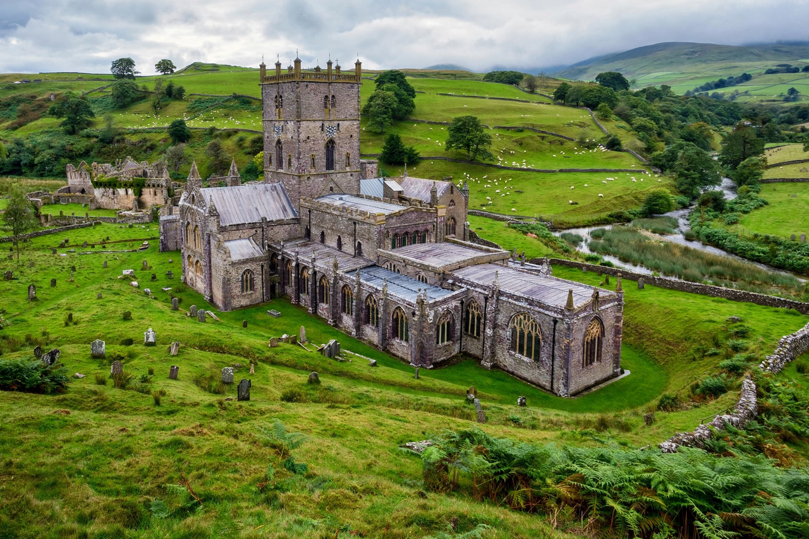

Welsh Church Act 1914

The Welsh Church Act 1914 is an Act of the Parliament of the United Kingdom under which the Church of England in Wales was disestablished and disendowed, becoming the independent Church in Wales. It took effect on 31 March 1920, having been delayed by the First World War. The Act was a long-standing demand of Welsh Liberals and Nonconformists, who formed the majority of Welsh Christians but were compelled to support an established Anglican church through tithes.
| Citation | 4 & 5 Geo. 5 c. 91 |
|---|---|
| Royal assent | 18 September 1914 |
| Commencement | 31 March 1920 |
| Effect | Disestablishment of the Church of England in Wales |
Background
By the late nineteenth century, roughly three-quarters of Welsh worshippers attended Nonconformist chapels — Calvinistic Methodist, Baptist, Congregationalist and Wesleyan — while the four Welsh dioceses of the Church of England (Bangor, St Asaph, St Davids and Llandaff) served a minority. The disestablishment campaign, championed by Welsh Liberal MPs including the young David Lloyd George, became central to Welsh national politics. Bills failed repeatedly in the 1890s and 1900s against opposition in the House of Lords.
Passage
After the Parliament Act 1911 removed the Lords' absolute veto, the bill introduced in 1912 could be enacted despite rejection by the Lords, under the new procedure requiring passage by the Commons in three successive sessions. It received royal assent on 18 September 1914, in the same week as the Government of Ireland Act, but the Suspensory Act 1914 postponed its operation until after the war. The Welsh Church (Temporalities) Act 1919 settled remaining financial questions and fixed 31 March 1920 as the date of disestablishment.
Effects
The Act severed the Welsh dioceses from the province of Canterbury: Welsh bishops ceased to sit in the House of Lords, and the disestablished church formed itself into the Church in Wales, electing its first Archbishop of Wales in 1920. The church lost much of its ancient endowment — property worth roughly £166,000 a year in pre-Reformation income was transferred to the University of Wales, the National Library and Welsh local authorities — while retaining its churches, cathedrals, parsonages and post-1662 endowments. The disendowment settlement was widely considered more generous than that imposed on the Irish Church in 1869.